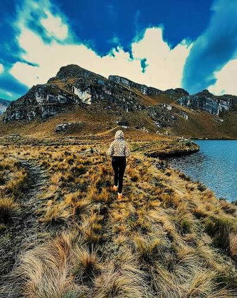
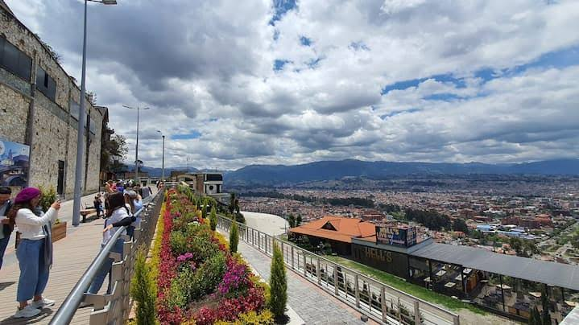

Parque Nacional Cajas
El Parque Nacional Cajas ofrece paisajes de montaña y lagunas. Este espacio permite conocer parte de la naturaleza de los alrededores de Cuenca.

Mirador Turi
El mirador de Turi permite contemplar Cuenca desde un punto elevado. Desde allí se puede observar la ciudad y apreciar su paisaje..
